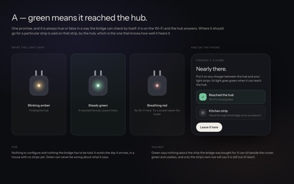

Artboardsdevelopmentthis checkoutpuck-split-reposhome-hub-aSearch this checkout⌘K
Looking at home-hub-a, on puck-split-repos — 7 commits ahead of development. What it has that development does not is marked Only here.Back to this checkout
The artboards
Every screen drawn before it was built, with the case for each. Newest first.
All {{count}}OpenDecided
Lately

The bridge light
Only hereWaiting for you5 Oct
The artboard viewer
Chosen5 Oct
Houses
PartlyB · 3 Oct
Away
Chosen2 Oct
Phones and away6
HousesBPartly3 Oct
AwayChosen2 Oct
The bandChosen2 Oct
Plain words8
Words: strips and the rooflineChosen2 Oct
Words: historyOpen2 Oct
Words: the band and toastsChosen2 Oct
developmenthome-hub · this checkout
puck-split-reposhome-hub-a · 7 commits ahead1 waiting1 new